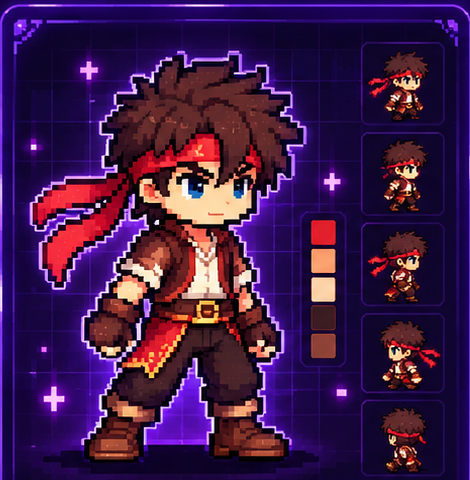
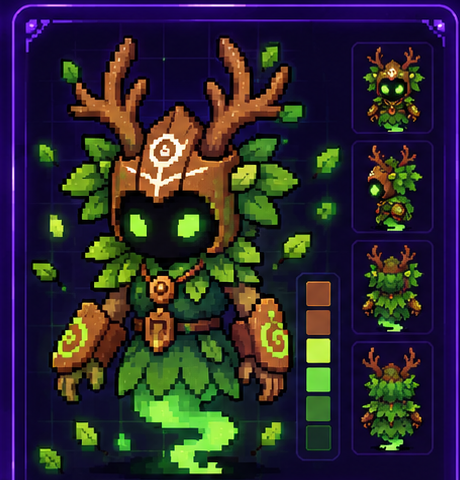
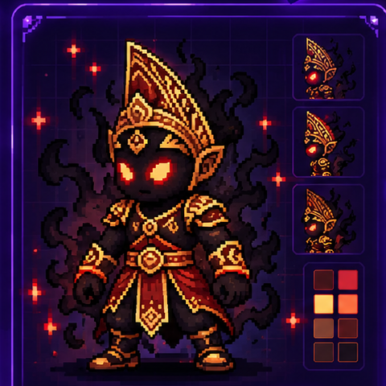

Karakter Utama
Raka merupakan karakter utama dalam gim Petualangan Nusantara. Karakter ini dirancang dengan gaya pixel art yang sederhana namun tetap menampilkan ciri khas dan warna aslinya.
Kumpulan ilustrasi karakter yang dibuat dan dikembangkan dengan Ibis Paint X, mulai dari desain karakter utama hingga karakter musuh untuk kebutuhan visual gim.

Raka merupakan karakter utama dalam gim Petualangan Nusantara. Karakter ini dirancang dengan gaya pixel art yang sederhana namun tetap menampilkan ciri khas dan warna aslinya.

Karakter musuh yang ditemui pada map Level 1. Memiliki desain bertema hutan dengan elemen daun dan kayu, serta efek visual yang khas.

Karakter musuh yang digunakan pada map Level 2. Memiliki desain yang lebih kuat dan detail, dengan tampilan khas kerajaan kuno serta efek bayangan yang menambah kesan misterius.